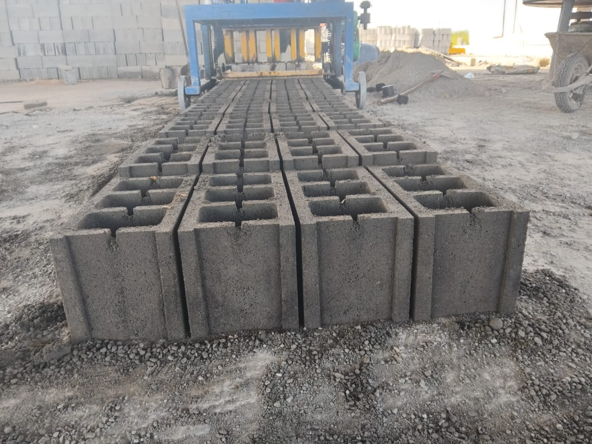

Briqueterie
Parpaings, dallettes et bordures pour vos travaux de construction et d’aménagement.
Voir les tarifs →
Briqueterie, matériaux, transport et location d’engins : quatre pôles pour votre chantier.
De la préparation du terrain à l’approvisionnement, POINT PRO vous accompagne avec quatre pôles de services complémentaires.
Parpaings, dallettes et bordures pour vos travaux de construction et d’aménagement.
Voir les tarifs →Ciment, fer à béton et autres matériaux de construction selon vos besoins.
Demander un prix →Transport de matériaux et déplacement d’engins avec des solutions adaptées au terrain.
Nos solutions transport →Des équipements pour vos opérations de chantier, de manutention et de bétonnage.
Découvrir les équipements →Parlez-nous de votre besoin. Nous vous répondrons rapidement.